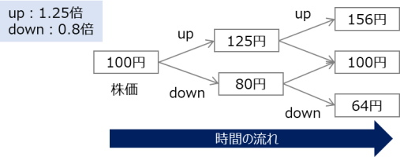

Binomial Model(以下、本モデル)は金融工学における理論モデルの一種。株価や金利などランダムに変動する値に対し、変動過程をupとdownの2種類と仮定することで、金融商品の値動きをシンプル化したモデルと言える。例えば有価証券オプションの価額は原資産価額の変動に伴い変動する。本モデルを使うことで、有価証券オプションを始めとした「ランダムな価額変動を伴う金融商品のプライシング」における基本的な考え方を考察できる。
オプション価額は契約時においてはプレミアムと同定され、契約時からの時間経過に従い変動する。本項においては契約時および満期日までの中途時点におけるプライシングを定式化する。
本モデルのうち、時間経過が1段階のみの場合を"Single-Period Binomial Model"、2段階以上の場合を"Multi-Period Binomial Model"と呼ぶ。本モデルより発展的な理論モデルとして、ternary model(3項モデル)が存在するのかは不明。本モデルはdiscreteな時間変化を仮定するが、binomialとcontinuousが対になっているかは不明。

| 記号・用語 | 定義 |
|---|---|
| client | 金融商品の買い手。long positionを持つ |
| agent | 金融商品の売り手。short poisionを持つ |
| $n$ | 時刻。$n\in \{0,\mathbb{N} \}$とし、$n=0$を契約時、$n=N$を満期時と定義する |
| $r$ | money marketにおいて、時刻が$1$進む間のinterest rate。 |
| $S_{n}$ | 時点$n$におけるstock $S$の価額 |
| $X_{n}$ | 時点$n$におけるagentの持つ全資産$X$の価額 |
| $K$ | strike price(行使価格) |
| $V_n$ | 時点$n$における金融商品$V$の価額 |
| 記号 | 定義 |
|---|---|
| $p$ | 株式$S$のstock priceが$u$倍となる(=事象Headが起きる)確率 |
| $q$ | 株式$S$のstock priceが$d$倍となる(=事象Tailが起きる)確率 |
| $w_n$ | $n$回目の事象。$w_{n}=H \textrm{ or } T$ for $n=1,2\cdots N$ |
| $j_n$ | $n$回目の事象に対するstock priceの倍率。$j_n=u \textrm{ or } d$ for $n=1,2\cdots N$ |
モデルの定義上、次の関係式を得る。
■No-arbitrage条件より
\begin{eqnarray}
0 < d < 1+r < u
\end{eqnarray}
■全事象の確率合計
事象は$H \textrm{ or } T$の2種類につき、
\begin{eqnarray}
p+q&=&1
\end{eqnarray}
■株価$S_n$の時間発展
時点$n$から時点$n+1$において、事象$w_(n+1)$が起きたとすると
\begin{eqnarray}
S_{n+1}(w_{n+1})=j_{n+1}S_{n}
\end{eqnarray}
特に事象Head or Tailに対しては次のように書く。
\begin{eqnarray}
S_{n+1}(H)&=&uS_{n}\\
S_{n+1}(T)&=&dS_{n}
\end{eqnarray}
例えば$n=3$に対しては次のような関係が得られる
\begin{eqnarray}
S_{3}&=&j_{3}S_{2}\\
&=&j_{3}\left( j_{2}S_{1}\right)\\
&=&j_{3}j_{2}\left( j_{1}S_{0} \right)
\end{eqnarray}
時点$n$におけるstock price$S_n$はそれ以前の事象$w_1, w_2 \cdots w_n$の全てに依存して決まる。これを明に表すときは$S=S_{n}(w_1, w_2 \cdots w_n)$と書く。
■時点$n=0$における条件
■時点$n=N$におけるpay-off
コールオプションの場合、時点$n=N$におけるclientのpay-off(支払)は$S_N-K$、agentのpay-off(支払)は$K-S_N$と書ける。clientはstrike price$K$を支払って、価額$S_N$のstockを得る。agentはその逆である。
■up factor/down factorの関係式（簡単のため？）
\begin{eqnarray}
u=\frac{1}{d}
\end{eqnarray}
以上の定義に則り、資産価額の時間発展を見ていく。
まず簡単のため、$N=1$のケースを考察する。
時点$n=0$においては次の2つのイベントが発生する
| $n=0$の直前 | イベント1 | イベント2 | |
|---|---|---|---|
| agentのmoney | $0$ | $X_0$ | $X_0 - \Delta_0 S_0$ |
| agentのstock | $0$ | $0$ | $\Delta_0 S_0$ |
| clientのasset | $X_0$ | $0$ | $0$ |
時点$n=1$までにおいては次の2つのイベントが発生する
| clientのasset | $n=0$ | イベント1 | イベント2 |
|---|---|---|---|
| money | $X_0 -\Delta_0 S_0$ | $(1+r)\left(X_0 -\Delta_0 S_0 \right)$ | $\Delta_0 S_1 + (1+r)\left(X_0 -\Delta_0 S_0 \right)$ |
| stock | $\Delta_0 S_0$ | $\Delta_0 S_1$ | $0$ |
■ヘッジ運用により得られる$X_1$ \begin{eqnarray} X_1(w_1) &=& \Delta_0 S_1(w_1) + (1+r)\left(X_0 -\Delta_0 S_0 \right) \end{eqnarray}
■ヘッジ資産とpay-offの一致
満期日$n=N(=1)$につき、pay-off(オプションの権利行使)が発生する。時刻$n=1$におけるオプション価額$V_1$は権利行使によるpay-offと同定できる。上述の通り、agentから見れば$K-S_1$の支払（$S_1-K$の受取）がpay-offであるが、ここでは具体的には記載せず単に$V$で表記する。agentが支払$V_2(w_1,w_2)$に相当する金額をヘッジするために、次の式を要請する。
\begin{eqnarray}
\left\{
\begin{array}{l}
\Delta_0 S_1(H) + (1+r)\left(X_0 -\Delta_0 S_0 \right) = V_1(H) \\
\Delta_0 S_1(T) + (1+r)\left(X_0 -\Delta_0 S_0 \right) = V_1(T)
\end{array}
\right.
\end{eqnarray}
2 variables $\Delta_0$、$X_0$に対する2つの拘束条件と考え、これらについて解く。詳細は計算過程参照。
\begin{eqnarray}
X_0 &=& \frac{1}{1+r}\left\{ \tilde{p}V_1(H)+\tilde{q}V_1(T) \right\} \\
\Delta_0&=& \frac{V_1(H)-V_1(T)}{S_1(H)-S_1(T)}
\end{eqnarray}
where
\begin{eqnarray}
\tilde{p}=\frac{1+r-d}{u-d},\quad \tilde{q}=\frac{u-1-r}{u-d}
\end{eqnarray}
すなわちagentは上記$X_0$でオプションを売り、その資金で上記$\Delta_0$ shares of stock購入しておけば、権利行使による支払をヘッジできる。このオプションのshort positionに対する$\Delta_0$をlong positionをDelta Hedgeと呼ぶ。
次に、$N=2$のケースを考察する。
時点$n=0$においては次の2つのイベントが発生する
| $n=0$の直前 | イベント1 | イベント2 | |
|---|---|---|---|
| agentのmoney | $0$ | $X_0$ | $X_0 - \Delta_0 S_0$ |
| agentのstock | $0$ | $0$ | $\Delta_0 S_0$ |
| clientのasset | $X_0$ | $0$ | $0$ |
時点$n=1$までにおいては次の3つのイベントが発生する
| clientのasset | $n=0$ | イベント1 | イベント2 | イベント3 |
|---|---|---|---|---|
| money | $X_0 -\Delta_0 S_0$ | $(1+r)\left(X_0 -\Delta_0 S_0 \right)$ | $\Delta_0 S_1 + (1+r)\left(X_0 -\Delta_0 S_0 \right)$ | $\Delta_0 S_1 + (1+r)\left(X_0 -\Delta_0 S_0 \right) - \Delta_1 S_1$ |
| stock | $\Delta_0 S_0$ | $\Delta_0 S_1$ | $0$ | $\Delta_1 S_1$ |
時点$n=2$までにおいては次の3つのイベントが発生する
| clientのasset | イベント1 | イベント2 |
|---|---|---|
| money | $(1+r)\{ \Delta_0 S_1 + (1+r)\left(X_0 -\Delta_0 S_0 \right) - \Delta_1 S_1 \}$ | $\Delta_1 S_2 + (1+r)\{ \Delta_0 S_1 + (1+r)\left(X_0 -\Delta_0 S_0 \right) - \Delta_1 S_1 \}$ |
| stock | $\Delta_1 S_2$ | $0$ |
■ヘッジ運用により得られる$X_1$
\begin{eqnarray}
X_2(w_1,w_2) &=& \Delta_1(w_1) S_2(w_1,w_2) + (1+r)\{ \Delta_0 S_1(w_1) + (1+r)\left(X_0 -\Delta_0 S_0 \right) - \Delta_1(w_1) S_1(w_1) \} \\
&=& \Delta_1(w_1) S_2(w_1,w_2) + (1+r)\{ X_1(w_1) - \Delta_1(w_1) S_1(w_1) \}
\end{eqnarray}
■ヘッジ資産とpay-offの一致
時刻$n=2$におけるオプション価額$V_2$は権利行使によるpay-offと同定できる。上述の通り、agentから見れば$K-S_2$の支払（$S_2-K$の受取）がpay-offであるが、ここでは具体的には記載せず単に$V$で表記する。agentが支払$V_2(w_1,w_2)$に相当する金額をヘッジするために、次の式を要請する。
\begin{eqnarray}
V_2(w_1,w_2) &=& X_2(w_1,w_2) \\
&=& \Delta_1(w_1) S_2(w_1,w_2) + (1+r)\{ X_1(w_1) - \Delta_1(w_1) S_1(w_1) \}
\end{eqnarray}
$(w_1,w_2)=(H,H),(H,T),(T,H),(T,)$の4ケースが全事象となり、4つの拘束条件を与える。
\begin{eqnarray}
V_2(H,H) &=& \Delta_1(H) S_2(H,H) + (1+r)\{ X_1(H) - \Delta_1(H) S_1(H) \} \\
V_2(H,T) &=& \Delta_1(H) S_2(H,T) + (1+r)\{ X_1(H) - \Delta_1(H) S_1(H) \} \\
V_2(T,H) &=& \Delta_1(T) S_2(T,H) + (1+r)\{ X_1(T) - \Delta_1(T) S_1(H) \} \\
V_2(T,T) &=& \Delta_1(T) S_2(T,T) + (1+r)\{ X_1(T) - \Delta_1(T) S_1(T) \}
\end{eqnarray}
$n=1$の条件式
\begin{eqnarray}
X_1(w_1) &=& \Delta_0 S_1(w_1) + (1+r)\left(X_0 -\Delta_0 S_0 \right) \\
&=& \Delta_0 S_1(w_1) + (1+r)\left(V_0 -\Delta_0 S_0 \right)
\end{eqnarray}
と合わせ、$X_1(T)$、$X_1(H)$、$\Delta_1(T)$、$\Delta_1(H)$、$V_0$、$\Delta_0$の4つとなる。これらについて解くと次が得られる。計算過程参照。
\begin{eqnarray}
X_0 &=& \frac{1}{1+r}\left( \tilde{p}S_1(H)+\tilde{q}S_1(T) \right) \\
\Delta_0&=& \frac{V_1(H)-V_1(T)}{S_1(H)-S_1(T)}\\
\Delta_1(T) &=& \frac{V_2(T,H)-V_2(T,T)}{ S_2(T,H)- S_2(T,T)}\\
V_1(T)&=& \frac{1}{1+r}\left(\tilde{p}V_2(T,H) + \tilde{q}V_2(T,T) \right)\\
\Delta_1(H) &=& \frac{V_2(H,H)-V_2(H,T)}{ S_2(H,H)- S_2(H,T)} \\
V_1(H)&=& \frac{1}{1+r}\left(\tilde{p}V_2(H,H) + \tilde{q}V_2(H,T) \right)
\end{eqnarray}
where
\begin{eqnarray}
\tilde{p}=\frac{1+r-d}{u-d},\quad \tilde{q}=\frac{u-1-r}{u-d}
\end{eqnarray}
一般化に、$N$-periodに対しても次が導出できる。詳細は計算過程参照。 \begin{eqnarray} \Delta_n(w_1,w_2\cdots w_n) &=& \frac{V_{n+1}(w_1,w_2\cdots w_n,H)-V_{n+1}(w_1,w_2\cdots w_n,T)}{S_{n+1}(w_1,w_2\cdots w_n,H)- S_{n+1}(w_1,w_2\cdots w_n,T)}\\ V_n(w_1,w_2\cdots w_n)&=& \frac{1}{1+r}\left(\tilde{p}V_{n+1}(w_1,w_2\cdots w_n,H) + \tilde{q}V_{n+1}(w_1,w_2\cdots w_n,T) \right)\\ \end{eqnarray} where \begin{eqnarray} \tilde{p}=\frac{1+r-d}{u-d},\quad \tilde{q}=\frac{u-1-r}{u-d} \end{eqnarray}
各時刻$n$において、コイントスに依存するcash flow$C_n(w_1,w_2\cdots w_n)$が発生するデリバティブ$V$の価額$V_n(w_1,w_2\cdots w_n)$は次のように得られる。
\begin{eqnarray}
V_n(w_1,w_2\cdots w_n) &=& \tilde{\mathbb{E}}_n\left[\sum^N_{k=n}\frac{C_k}{(1+r)^{k-n}}\right]\\
&=& \tilde{\mathbb{E}}_n\left[C_n + \frac{C_{n+1}}{1+r}+\frac{C_{n+2}}{(1+r)^2}\cdots +\frac{C_N}{(1+r)^{N-n}}\right]
\end{eqnarray}
※$\tilde{\mathbb{E}}_n$はrisk-neutral測度下の条件付期待値とする。
agentとclientとのやりとりは以下のようになる。
| 時刻 | $n=0$ | $n=0+$ | $n=1$ | $n=1+$ | $n=2$ |
|---|---|---|---|---|---|
| agentのmoney | $X_0$ | $X_0-C_0-\Delta_0X_0$ | $(1+r)(X_0-C_0-\Delta_0X_0)$ | $X_1-C_1-\Delta_1S_1$ | $(1+r)(X_1-C_1-\Delta_1S_1)$ |
| agentのstock | $0$ | $\Delta_0S_0$ | $\Delta_0S_1$ | $\Delta_1S_1$ | $\Delta_1S_2$ |
| clientのmoney | $-X_0$ | $C_0-X_0$ | $(1+r)(C_0-X_0)$ | $(1+r)(C_0-X_0)+C_1$ | $(1+r)\left\{(1+r)(C_0-X_0)+C_1\right\}$ | clientの$V$ | $V_0$ | $V_0$ | $V_1$ | $V_1$ | $V_2$ |
時刻$n\rightarrow n+$の間には次の操作をしているものとする。
デリバ価額$V_n$とヘッジするポジションが等価であることを課す。
\begin{eqnarray}
V_{n+1}(w_1,\cdots w_n,w_{n+1})&=&X_{n+1}(w_1,\cdots w_n,w_{n+1}) \\
&=& \Delta_{n}S_{n+1}(w_1,\cdots w_n,w_{n+1})+(1+r)(X_n-C_n-\Delta_nS_n) \label{cash}
\end{eqnarray}
$w_{n+1}=H,T$のケースについて書き下す。
\begin{eqnarray}
V_{n+1}(w_1,\cdots w_n,H)
&=& \Delta_{n}S_{n+1}(w_1,\cdots w_n,H)+(1+r)(X_n-C_n-\Delta_nS_n)\\
V_{n+1}(w_1,\cdots w_n,T)
&=& \Delta_{n}S_{n+1}(w_1,\cdots w_n,T)+(1+r)(X_n-C_n-\Delta_nS_n)
\end{eqnarray}
これらを引くと次が得られる。
\begin{eqnarray}
\Delta_n(w_1,w_2\cdots w_n) &=& \frac{V_{n+1}(w_1,w_2\cdots w_n,H)-V_{n+1}(w_1,w_2\cdots w_n,T)}{S_{n+1}(w_1,w_2\cdots w_n,H)- S_{n+1}(w_1,w_2\cdots w_n,T)}\\
\end{eqnarray}
eq.($\ref{cash}$)に代入する
\begin{eqnarray}
V_{n+1}(w_1,\cdots w_n,w_{n+1})
&=& \Delta_{n}\left\{S_{n+1}-(1+r)S_n \right\}+(1+r)(X_n-C_n)\\
&=& \frac{V_{n+1}(w_1\cdots w_n,H)-V_{n+1}(w_1\cdots w_n,T)}{S_{n+1}(w_1\cdots w_n,H)- S_{n+1}(w_1\cdots w_n,T)}\left\{S_{n+1}-(1+r)S_n \right\}+(1+r)(X_n-C_n)\\
&=& \frac{V_{n+1}(w_1\cdots w_n,H)-V_{n+1}(w_1\cdots w_n,T)}{u- d}\left(j_{n+1}-1-r \right)+(1+r)(X_n-C_n)\\
\Rightarrow V_n-C_n&=& \frac{1}{1+r}\left[ V_{n+1}(w_1,\cdots w_n,w_{n+1})-\frac{V_{n+1}(w_1\cdots w_n,H)-V_{n+1}(w_1\cdots w_n,T)}{u- d}\left(j_{n+1}-1-r \right) \right] \label{cash2}
\end{eqnarray}
$[\ ]$内の項について、$w_{n+1}=H,T$それぞれのケースを計算する。
□$w_{n+1}=H$のとき
\begin{eqnarray}
[\ ]&=&V_{n+1}(w_1,\cdots w_n,H)-\frac{V_{n+1}(w_1\cdots w_n,H)-V_{n+1}(w_1\cdots w_n,T)}{u- d}\left(u-1-r \right)\\
&=& \tilde{p}V_{n+1}(w_1\cdots w_n,H) + \tilde{q}V_{n+1}(w_1\cdots w_n,T)
\end{eqnarray}
□$w_{n+1}=T$のとき
\begin{eqnarray}
[\ ]&=&V_{n+1}(w_1,\cdots w_n,T)-\frac{V_{n+1}(w_1\cdots w_n,H)-V_{n+1}(w_1\cdots w_n,T)}{u- d}\left(d-1-r \right)\\
&=& \tilde{p}V_{n+1}(w_1\cdots w_n,H) + \tilde{q}V_{n+1}(w_1\cdots w_n,T)
\end{eqnarray}
従ってeq.(\ref{cash2})は次のように書ける。
\begin{eqnarray}
V_n-C_n&=& \frac{1}{1+r}\left[\tilde{p}V_{n+1}(w_1\cdots w_n,H)+\tilde{q}V_{n+1}(w_1\cdots w_n,T) \right] \\
&=&\tilde{\mathbb{E}}_n\left[\frac{1}{1+r}V_{n+1} \right] \\
\Rightarrow V_n &=& C_n +\tilde{\mathbb{E}}_n\left[\frac{1}{1+r}V_{n+1} \right] \\
&=& C_n +\tilde{\mathbb{E}}_n\left[\frac{1}{1+r}\left\{C_{n+1} +\tilde{\mathbb{E}}_{n+1}\left[\frac{1}{1+r}V_{n+2} \right]\right\} \right] \\
&=& C_n +\tilde{\mathbb{E}}_n\left[\frac{C_{n+1}}{1+r}\right] +\tilde{\mathbb{E}}_{n}\left[\frac{1}{(1+r)^2}V_{n+2} \right] \\
&=& C_n +\tilde{\mathbb{E}}_n\left[\frac{C_{n+1}}{1+r}\right] +\tilde{\mathbb{E}}_{n}\left[\frac{1}{(1+r)^2}\left\{C_{n+2} +\tilde{\mathbb{E}}_{n+2}\left[\frac{1}{1+r}V_{n+3} \right]\right\}\right] \\
&=& \tilde{\mathbb{E}}_n[C_n] +\tilde{\mathbb{E}}_n\left[\frac{C_{n+1}}{1+r}\right] +\tilde{\mathbb{E}}_{n}\left[\frac{C_{n+2}}{(1+r)^2}\right]+\tilde{\mathbb{E}}_{n}\left[\frac{1}{(1+r)^3}V_{n+3} \right]
\end{eqnarray}
以上の操作を繰り返すことで次の式が得られ、題意は満たされる。
\begin{eqnarray}
V_n &=& \tilde{\mathbb{E}}_n\left[C_n +\frac{C_{n+1}}{1+r} +\frac{C_{n+2}}{(1+r)^2} +\cdots +\frac{C_{N}}{(1+r)^{N-n}}\right]
\end{eqnarray}